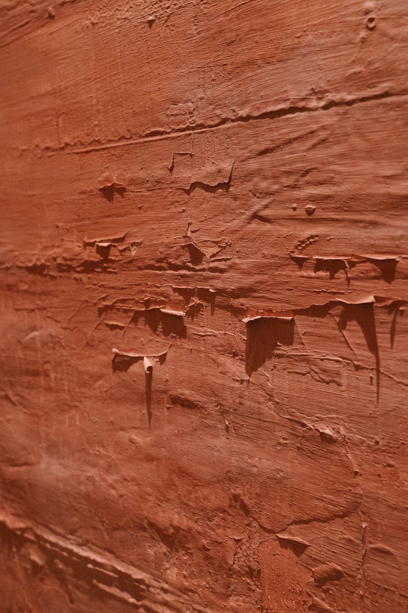
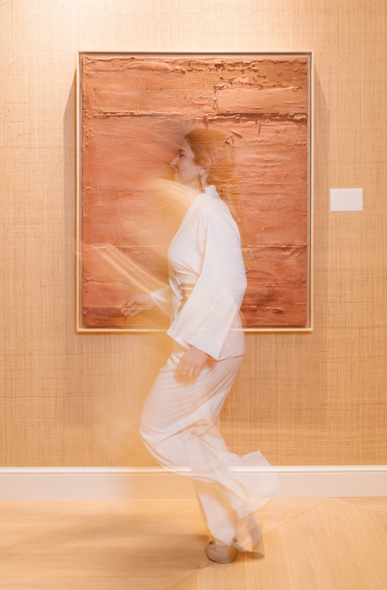
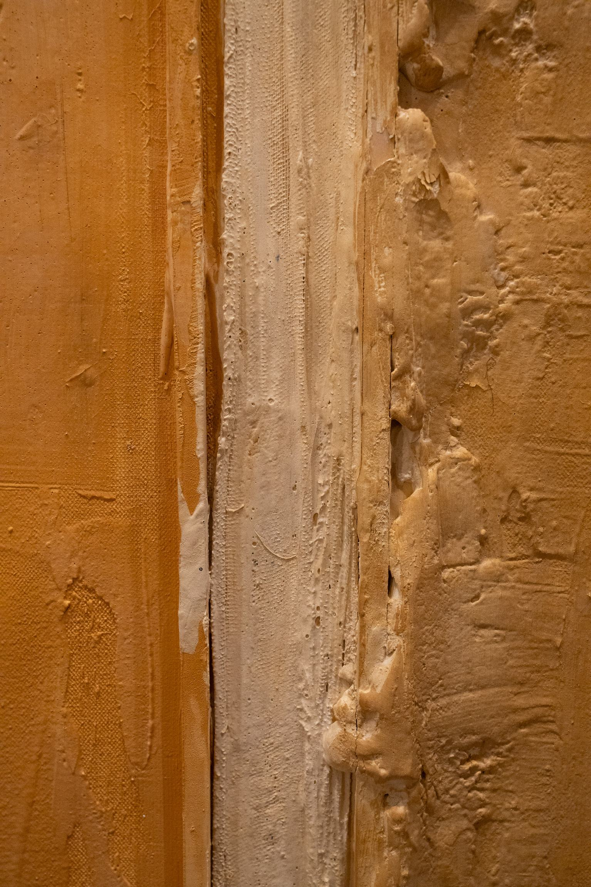
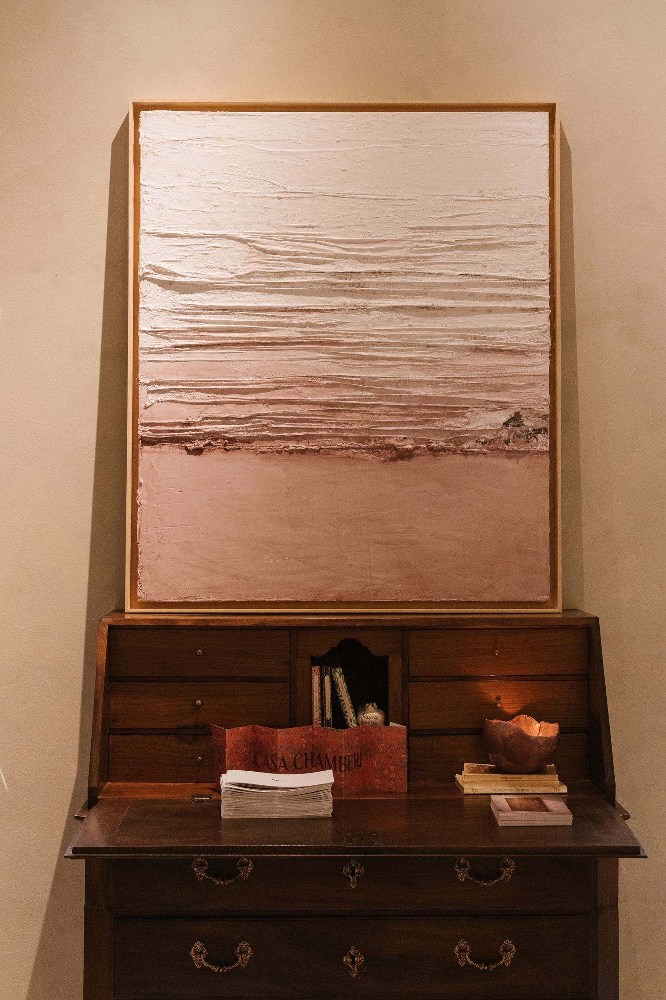
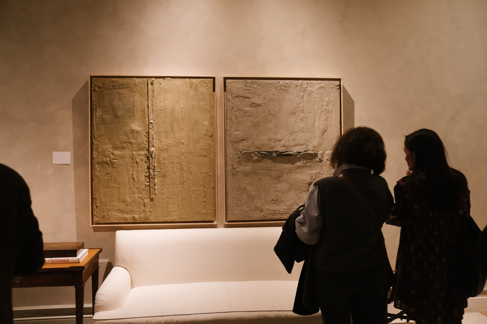
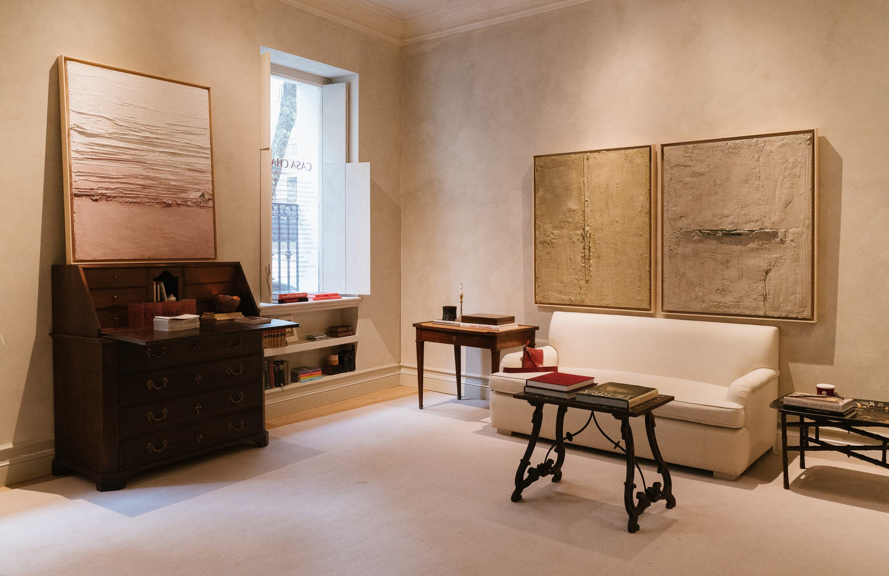

Biografía
Leticia de Amescua
Tras terminar los estudios de arquitectura en Madrid, compagina su labor en su estudio de arquitectura con una investigación plástica centrada en la materia, el tiempo y la memoria de los espacios.
Biografía
Tras terminar los estudios de arquitectura en Madrid, compagina su labor en su estudio de arquitectura con una investigación plástica centrada en la materia, el tiempo y la memoria de los espacios.

La mirada
Su obra parte de la observación de la arquitectura vivida: muros erosionados, superficies reparadas, estructuras que revelan el paso del tiempo.

La pintura
En la pintura encuentra un territorio libre, sin escala ni norma, donde puede experimentar con materiales, texturas y gestos que en la arquitectura real estarían condicionados.

La materia
A través de materiales utilizados en la construcción, construye paisajes matéricos que evocan fachadas desgastadas, restos de estructuras o huellas de lo que fue.

La huella

El equilibrio
Un punto de equilibrio entre la paz y la fuerza, lo estructural y lo orgánico, lo construido y lo que inevitablemente se transforma.
